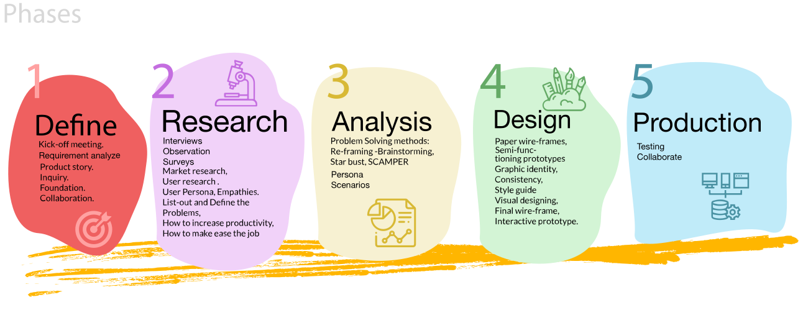
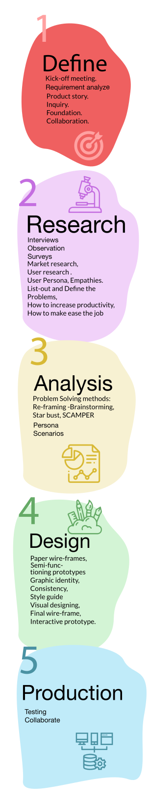

Experienced in:
UX Strategy design, UX Research, Wireframing,
Prototyping, Interaction design VIsual disgn, and HTML /CSS Coding.
UX design case study
UX design process


UX Audit
Strategic Proposal
Deep Analysis
Information Architecture & Usability Enhancement
Wireframes, Prototypes, & Design System
Development Handover & Support
Usability Testing & Iterations
UX Audit
Understanding the Current State
Case study 1
G2 OCEAN- Fleet Management Application
G20 Shipping is a bulk carrier shipping company that uses this application for stowage and voyage planning operations. It helps the cargo distribution, optimize vessel performance, and ensure safe and compliant voyages.
DOMAIN:
Marine Cargo shipping. | Year: 2025 |
PROJECT TYPE:
Responsive Web application |
USER:
Cargo planners and Port operators MY ROLE:
Requirement analyse, Sketches, UX Research, Wireframe, Visual designig and Interactin designing.
MAPFRE MSV Life Insurance has offered a wide range of insurance packages through a well establised network of independent agents and brokers. MMSV is looking to expand their market share by introducing new technology in client dealing.
DOMAIN:
Insurance |
PROJECT TYPE:
Responsive Web application |
USER:
Insurance Agent MY ROLE:
Requirement analyse, UX Research and User Testing, Leading the teams for- Problem solving, Sketches, maping, Wireframe, Visual designig and Interactin
designing.
DOMAIN:
Marine shipping PROJECT TYPE:
Responsive Web application USER:
Voyage Planners, Port Captains and Operations Coordinators MY ROLE:
Requirement analyse, UX Research and User Testing, Leading the teams for- Problem solving, Sketches, maping, Wireframe, Visual designig and Interactin
designing.
DOMAIN:
Marine shipping PROJECT TYPE:
Responsive Web application USER:
Voyage Planners, Port Captains and Operations Coordinators MY ROLE:
Requirement analyse, UX Research and User Testing, Leading the teams for- Problem solving, Sketches, maping, Wireframe, Visual designig and Interactin
designing.
DOMAIN:
Marine shipping PROJECT TYPE:
Responsive Web application USER:
Voyage Planners, Port Captains and Operations Coordinators MY ROLE:
Requirement analyse, UX Research and User Testing, Leading the teams for- Problem solving, Sketches, maping, Wireframe, Visual designig and Interactin
designing.